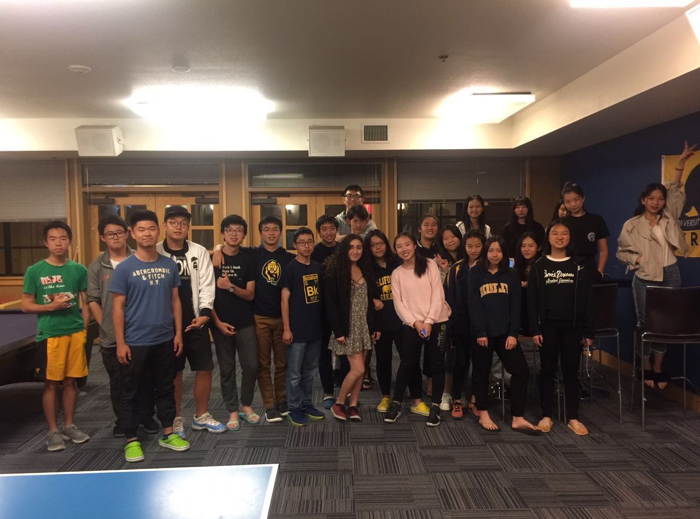

Welcome to my Memory Palace!
This is me.

Oops, wrong one. Here is a picture of me in Tibet. I travelled there the summer before college. One of the most beautiful places I have ever been to. Recommend everyone to consider visiting there at least once in a lifetime.

My dear mother, the most precious person on earth.
I was born in September, a Virgo.
I love museums and have seriously considered working in one.
I have also recently picked up baking due to the pandemic 😂 .
Before my college, I also went to University of California, Berkeley for summer school and met some great people.
Now I am a rising junior at Vanderbilt University. One of my best memory at Vanderbilt was singing in the University Concert Choir.

I also went on a volunteer trip called Alternative Winter Break during my first winter break and built this cool small bridge with my teammates. It was great fun!
To be continued.